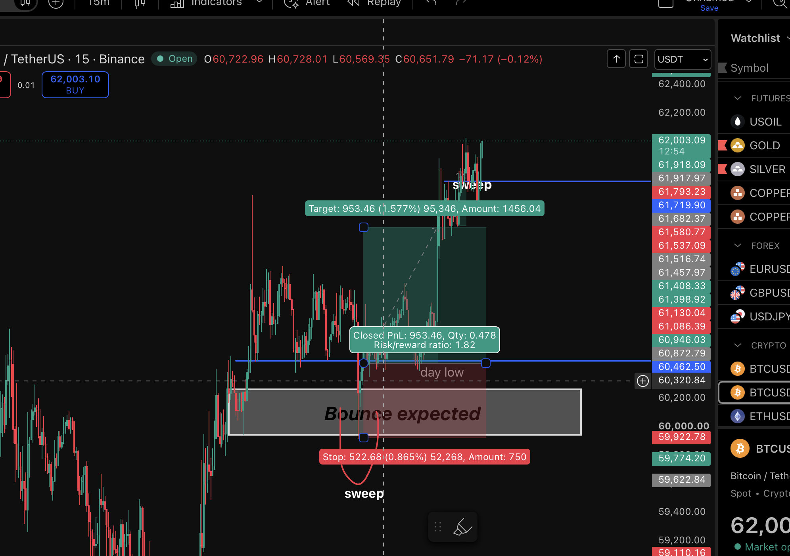
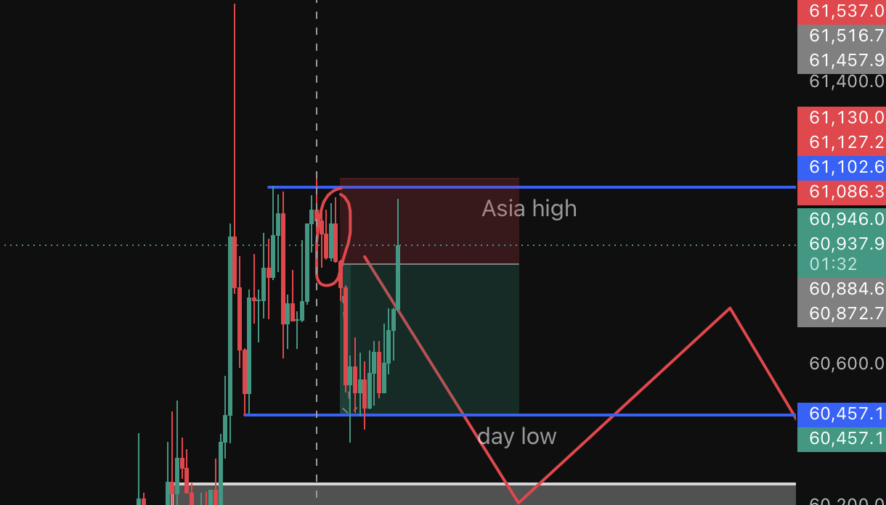

The things I look for, and why they work.
Where
Key levels
Daily open, previous day high and low, weekly open, Monday high and low, the NYSE open and the session highs and lows. These are where everyone's stops and orders sit, so that's where the real moves start.
No key level, no trade. Everything else is built on this.
The trap
Liquidity sweep and fakeout

Price runs just past a level, takes the stops behind it, then snaps back. The traders who chased the breakout are now trapped, and their exits fuel the move the other way.
Above: price sweeps below the day low (60,462) into the bounce zone, reclaims it, and the long runs to target. R:R of 1.82.
The trap
Momentum: failed pushes
Sometimes there's no clean sweep. Instead price keeps hitting the same level and failing, two or three times. Each failure tells you the other side is defending it. I treat that as a valid substitute for a sweep.
The trigger
Reclaim and engulfing
The sweep alone isn't the entry. I want a 5m or 15m candle to close back on the other side of the level. An engulfing candle is the cleanest version: it swallows the move that did the sweep.
No close, no confirmation. A wick back inside isn't enough.
The trigger
Imbalance and inversion

A fast move leaves a gap (an imbalance) behind. When price comes back and that gap flips against the original move, it's an inversion: the breakout traders are stuck.
Above: Asia high swept, inversion circled, short to the day low.
Context
15m bias and range position
Trade with the 15-minute structure, and take setups from the top or the bottom of the range, never the middle. The middle is where I've been chopped up the most.
Extra
Double top/bottom and order blocks
Extra structure at the level. A double bottom on a key level, or an order block sitting right on the weekly open, turns a good level into a great one.